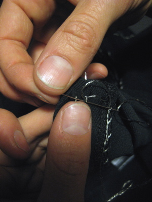

2015-11-17 - Nº 29

Editorial
Aqui está a Newsletter Nº 29 no seu formato habitual. Foram adicionados botões de partilha nas várias redes sociais, se gostar da Newsletter partilhe-a!
Todas as Newsletters encontram-se indexadas no link.
Esta Newsletter tem os seguintes tópicos:
Esta semana foi revelado um segredo sobre essa constante, o pi que o interliga com a física quântica. A ARM lança um novo processador, o ARM Cortex-A35 que irá ser o inicio de uma nova família de processadores ultra eficientes - ARMv8-A. A NVIDIA lança o Jetson TX1 que promete trazer muito desempenho para os sistemas embebidos, permitindo a exploração em áreas como a visão computorizada e outras que exigem grande poder computacional nestas plataformas. Esta semana é também notícia um frigorífico designado por WindChill que não requer electricidade, muito importante para as áreas do globo que não dispõem deste recurso. Na Newsletter desta semana iremos apresentar um projeto de maker que foi desenvolvido pela criadora do LilyPad que é um casaco para usar de noite quando se vai andar de bicicleta. Iremos construir um circuito que é um temporizador.
 João Alves ([email protected])
João Alves ([email protected])
O conteúdo da Newsletter encontra-se sob a licença  Creative Commons Attribution-NonCommercial-ShareAlike 4.0 International License.
Creative Commons Attribution-NonCommercial-ShareAlike 4.0 International License.
Novidades da Semana ^
Discovery of classic pi formula a ‘cunning piece of magic’
"While most people associate the mathematical constant pi with arcs and circles, mathematicians are accustomed to seeing it in a variety of fields. But two University scientists were still surprised to find it lurking in a quantum mechanics formula for the energy states of the hydrogen atom. “We didn’t just find pi,” said Tamar Friedmann, a visiting assistant professor of mathematics and a research associate of high energy physics, and co-author of a paper published this week in the Journal of Mathematical Physics. “We found the classic seventeenth century Wallis formula for pi, making us the first to derive it from physics, in general, and quantum mechanics, in particular.”"
-
"ARM announced today the ARM® Cortex®-A35 processor, a new standard-bearer for efficiency among 64-bit processors. The processor is the first CPU in a new family of ultra-high-efficiency ARMv8-A processors designed for high-growth mobile and embedded applications. Cortex-A35 has been designed to open up greater user experiences enabled by the ARMv8-A architecture with its 64-bit capable and 32-bit computational capability and complete set of cryptography features. ARM expects the Cortex-A35 to begin shipping in production silicon from its partners by late 2016. “Cortex-A35 is the natural successor to the compact-footprint Cortex-A7, the leading energy-efficient processor, which has powered more than a billion smartphones and tablets,” said James McNiven, general manager, CPU group. “With the introduction of the world’s most efficient 64-bit capable mobile processor, ARM and its partners will deliver the benefits of 64-bit computing to the next billion smartphone users and beyond.”"
NVIDIA® Jetson™ TX1 Supercomputer-on-Module Drives Next Wave of Autonomous Machines
"Today NVIDIA introduced Jetson TX1, a small form-factor Linux system-on-module, destined for demanding embedded applications in visual computing. Designed for developers and makers everywhere, the miniature Jetson TX1 (figure 1) deploys teraflop-level supercomputing performance onboard platforms in the field. Backed by the Jetson TX1 Developer Kit, a premier developer community, and a software ecosystem including Jetpack, Linux For Tegra R23.1, CUDA Toolkit 7, cuDNN, and VisionWorks, Jetson enables machines everywhere with the proverbial brains required to achieve advanced levels of autonomy in today’s world. Aimed at developers interested in computer vision and on-the-fly sensing, Jetson TX1’s credit-card footprint and low power consumption mean that it’s geared for deployment onboard embedded systems with constrained size, weight, and power (SWaP). Jetson TX1 exceeds the performance of Intel’s high-end Core i7-6700K Skylake in deep learning classification with Caffe, and while drawing only a fraction of the power, achieves more than ten times the perf-per-watt."
New refrigerator cools food without electricity

"More than 1 billion people around the world still don't have access to electricity, representing about 15 percent of humanity. That poses several problems, including not just heating, cooling and lighting, but also food preservation. Universal access to electricity is still years away, with the World Bank having set 2030 as a target date. But in the meantime, a team of students from the University of Calgary has come up with a way to keep food cool without relying on electricity. Named WindChill, the new refrigerator prototype instead turns to the animal kingdom for inspiration, using biomimicry to imitate animals including bees, termites, coral, elephants, kangaroos and meerkats. And not only is the Windchill designed to preserve food without electricity, but it's also cheap and relatively portable, making it a potential windfall for people living in remote, rural areas."
Ciência e Tecnologia ^
Sequential Self-Folding Structures by 3D Printed Digital Shape Memory Polymers
"Folding is ubiquitous in nature with examples ranging from the formation of cellular components to winged insects. It finds technological applications including packaging of solar cells and space structures, deployable biomedical devices, and self-assembling robots and airbags. Here we demonstrate sequential self-folding structures realized by thermal activation of spatially-variable patterns that are 3D printed with digital shape memory polymers, which are digital materials with different shape memory behaviors. The time-dependent behavior of each polymer allows the temporal sequencing of activation when the structure is subjected to a uniform temperature. This is demonstrated via a series of 3D printed structures that respond rapidly to a thermal stimulus, and self-fold to specified shapes in controlled shape changing sequences. Measurements of the spatial and temporal nature of self-folding structures are in good agreement with the companion finite element simulations. A simplified reduced-order model is also developed to rapidly and accurately describe the self-folding physics. An important aspect of self-folding is the management of self-collisions, where different portions of the folding structure contact and then block further folding. A metric is developed to predict collisions and is used together with the reduced-order model to design self-folding structures that lock themselves into stable desired configurations."
A folding robot weighing four grams that crawls and jumps
"Researchers at EPFL have come up with a folding, reconfigurable robot that is capable of crawling and jumping. Modelled on the inchworm, it represents a new paradigm in robotics. The word robot generally conjures up images of a rigid structure and electronic motors. In Jamie Paik's Reconfigurable Robotics Laboratory, however, the word takes on a whole new meaning. Researchers have thrown convention out the window by creating robots patterned on origami: flat, ultra-light and foldable. The most recent of these origami robots or "robogamis", Tribot, has been unveiled at the International Conference on Intelligent Robots and Systems (IROS). Tribot's gait pattern is modelled after inchworms, but what makes it unique is its gait mode: it can simultaneously switch between crawling and jumping, which means it can jump over obstacles and then resume moving forward. Tribot is two centimetres tall, weighs 4 grams and has a T-shaped structure with three legs. "This unusual robot can jump up to seven times its height, and it does not need to be reset between jumps," said Paik."
First optical rectenna—combined rectifier and antenna—converts light to DC current
"Using nanometer-scale components, researchers have demonstrated the first optical rectenna, a device that combines the functions of an antenna and a rectifier diode to convert light directly into DC current. Based on multiwall carbon nanotubes and tiny rectifiers fabricated onto them, the optical rectennas could provide a new technology for photodetectors that would operate without the need for cooling, energy harvesters that would convert waste heat to electricity - and ultimately for a new way to efficiently capture solar energy. In the new devices, developed by engineers at the Georgia Institute of Technology, the carbon nanotubes act as antennas to capture light from the sun or other sources. As the waves of light hit the nanotube antennas, they create an oscillating charge that moves through rectifier devices attached to them. The rectifiers switch on and off at record high petahertz speeds, creating a small direct current."
Modelos 3D ^
Com a disponibilidade de ferramentas que permitem dar azo a nossa imaginação na criação de peças 3D e espaços como o thingiverse para as publicar, esta rubrica apresenta alguns modelos selecionados que poderão ser úteis.
EEZYbotARM (http://www.thingiverse.com/thing:1015238)
This is a 3D printed robotic arm
The intent was to design something "easy" and cheap to built with a good visual impact also.
Test video: https://youtu.be/qovZKW0DxWk https://youtu.be/N55W8TdMfCo
I spent time to look around the web at some examples available that could be a good starting from, and between all I found interesting the phenoptix MeArm V4 project (http://www.thingiverse.com/thing:360108) especially for the simplicity and low cost of parts involved. So I kept only the kinematics geometry and redesign all parts including the gripper
23/09/15 updated instruction and round ramp stl (R01), added ball stl preliminary tests video https://www.youtube.com/watch?v=x9C_3WHr1G0 https://www.youtube.com/watch?v=0OFL6MxbPIM
25/09/15 updated gripper r01 files
04/10/15 added instructables link in instruction
MINI Desk Spot Light (http://www.thingiverse.com/thing:1128101)
Here is a MINI Desk Spot Light. Perfect to light up dark spots for what ever you are working on.
Things Needed.
- 3x 3mmx20mm
- 3x 3mm lock nut
- 12v LED Spool
- 12v DC output
Arduino case with fan mount (http://www.thingiverse.com/thing:1124607)
This is an Arduino UNO case with an in-built fan mount. It's sized to allow a shield to be added and cooled by the fan. In the photos it has a CNC controller mounted and an 80" fan
Circuitos ^
Aqui é apresentado um circuito simples que poderá ser construído com componentes.
Temporizador com 555
Hoje iremos construir um circuito que é um temporizador.
Foi usado o IC 555. Este foi configurado no modo Mono-estável. Quando o botão é premido o tempo inicia-se e o LED acende. Ao fim de algum tempo este apaga-se.
Para se calcular o tempo que o LED se encontra aceso deverá usar-se a seguinte formula t = 1.1 * C * R em que C é o valor do condensador C2 em Farads e R é o valor da Resistência RV1 em Ohms. O tempo é em segundos.
Se quisermos que o tempo seja de cerca de 60 segundos, atendendo a que o Condensador usado no circuito é de 100uF (0.0001F) a formula a usar é a seguinte R = 60 / (0.0001 * 1.1), R = 546000 Ohms.
Esquemático
Componentes (BOM):
Circuito:
- 1x Resistência de 10K Ohms (R1)
- 1x Resistência de 470 Ohms (R2)
- 1x Resistência Variável de 1M Ohms (RV1)
- 1x IC NE555
- 1x LED de 5mm Vermelho (D1)
- 1x Condensador Cerâmico de 100nF (C1)
- 1x Condensador Electrólito de 100uF (C2)
- 1x Botão de pressão (SW1)
Pin-out dos IC/Componentes
Links úteis:
Artigo do Maker ^
Projeto interessante publicado por um maker.
turn signal biking jacket
Hoje vamos apresentar um projeto de maker que é um casaco com sinalização para andar de bicicleta a noite. Este projeto foi desenhado pela criadora do LilyPad, a Leah Buechley e encontra-se na página.
Passo 1: Materiais
Irá ser necessário:
- Placa LilyPad
- Placa USB LilyPad
- Cabo mini USB
- Fonte de alimentação LilyPad
- 16 LEDs LilyPad
- 2 Botões de pressão
- Linha condutora
- peça de vestuário ou de um pedaço de tecido
São necessárias as seguintes ferramentas:
- multímetro digital
- uma Agulha ou duas
- um pedaço de giz
- uma régua
- tesoura
- Fita duplo lado
- máquina de costura (opcional)
Passo 2: Desenho
Decida onde cada componente será colocado para depois os poder coser juntos com o menor número de cruzamentos de fios possível. Faça um esboço do projeto para que possa ajudar a medida que trabalha. Aqui estão esboços para o casaco do projeto:
nota importante acerca da fonte de alimentação
Quando desenhar, deverá manter sua fonte de alimentação e placa LilyPad principal próximos um dos outro. Se eles ficarem muito distantes um do outro, é provável que tenha problemas com o LilyPad ou que simplesmente não funcione de todo.
Por quê? Fio condutor tem a resistência não-trivial. (O fio revestido de prata da SparkFun que vem com o kit inicial LilyPad tem cerca de 14 ohms / por pé.) Dependendo de quais os módulos que estiver a usar na sua construção, o LilyPad pode gastar até 50 miliamperes (mA) de corrente. A lei de Ohm diz que a queda de tensão através de um material condutor - a quantidade de tensão que se perca como movimentos de electricidade através do material - é igual à resistência dos materiais condutores vezes a quantidade de corrente que flui através dele.
Por exemplo, se o LilyPad está a um pé de distância da fonte de alimentação, a resistência total do material condutor que liga o LilyPad a fonte de alimentação é de cerca de 28 ohms. (14 Ohms no fio condutor que vai do terminal negativo da fonte de alimentação para o pino negativo no LilyPad e 14 Ohms no fio condutor que liga os terminais positivo em conjunto). Isto significa que podemos esperar uma queda de 1,4 Volts. Isto significa que embora a fonte tenha uma tensão de 5 Volts, o LilyPad só vai receber 3,6 Volts (5 Volts - 1,4 volts) (28 Ohms * .05 amps.). Uma vez que a tensão no LilyPad cai abaixo de cerca de 3,3 volts, que irá repor. A resistência dos fios de + na fonte de alimentação de + no LilyPad e - na fonte de alimentação para - na LilyPad deve ser, no máximo, 10 ohms. Planeie a distância de acordo com esta regra.
Passo 3: Coloque o esboço na peça de vestuário
Use giz ou algum outro marcador não permanente. Se quiser, use uma régua para se certificar que tudo é recto e simétrico.
Passo 4: Fixe temporariamente o Lilypad
Use fita dupla face para prender temporariamente peças Lilypad para o seu vestuário.
Isto dará uma boa noção de como a peça final ficará. Também ajuda a manter tudo no lugar, enquanto se fazem as costuras.
Passo 5: Construção
Corte as pontas na parte de trás da fonte de alimentação
Passo 6: Fixe a bateria no tecido
Geralmente, quer fazer tudo o que puder para evitar a fonte de alimentação de se mover sobre o tecido. Recomenda-se que se cole ou costure a bateria antes de iniciar o restante do projeto. Pode também querer colar ou costurar algo debaixo do da fonte de alimentação para ajudar a impedir que puxe o tecido ou saltite quando se move.
Se estiver a trabalhar com um pedaço fino ou trecho de tecido - em primeiro lugar, reconsiderar esta escolha! É muito mais fácil para trabalhar um pedaço pesado de tecido não-elástico. Se está determinado a usar um tecido delicado, escolha o local para a fonte de alimentação com cuidado. É o módulo electrónico mais pesado, coloque-o em algum lugar onde ele não distorça muito o tecido. E use definitivamente cola ou costure algo debaixo da fonte de alimentação.
Passo 7: Costurar a pétala + da fonte de alimentação na roupa.
Se é novo na costura, confira esta introdução antes de começar para informações sobre como enfiar uma agulha, amarrar nós e fazer pontos. Cortar um comprimento de 3-4 pés de fio condutor. Enfie o fio na agulha, puxando o suficiente da linha através da agulha para ele não cair facilmente. Dê um nó na extremidade do comprimento do segmento mais longo. Não corte o fio muito perto do nó ou ele vai rapidamente desfiar.
Vindo da parte de trás do tecido para a frente, picar a agulha no tecido mesmo ao lado do + pétala na fonte de alimentação e, em seguida, a partir da frente do tecido, puxe-o completamente. O nó na extremidade do fio vai evitar o fio de puxar para fora do tecido. Agora, fazer um ponto de entrar no buraco no buraco na pétala + na fonte de alimentação. Fazer isto diversas vezes mais, contornado em torno da parte posterior do tecido para a frente, passando através do furo + pétala de cada vez.
Preste atenção especial a esta costura. É a ligação mais importante que vai costurar no projeto. Quererá ter certeza que obtém um excelente contacto entre as pétalas para o fornecimento de energia e seu fio condutor. Vá até o buraco várias vezes (pelo menos 5) com a sua costura. Mantenha costura até que não consegue mais enfiar o seu agulha através do buraco. Não corte o fio, basta avançar para a próxima etapa.
Passo 8: Costurar da bateria até ao LilyPad.
Uma vez que costurou a pétala + da bateria para baixo, faça pequenos pontos bonitos para a pétala + do LilyPad. (No projeto foi utilizado um revestimento com um forro de lã e costurado apenas através do revestimento interior do velo, de modo que não há pontos eram visíveis no exterior do revestimento).
Passo 9: Costurar a pétala + do LilyPad para baixo, terminando a conexão.
Quando chegar ao LilyPad, costurar a + pétala até o tecido com o fio condutor. Assim como fez com a pétala da bateria, deverá ter cuidado extra para obter uma conexão robusta aqui. Esta costura é que faz a conexão eléctrica entre a fonte de alimentação e LilyPad
Quando este acessório estiver, costurar para longe do LilyPad cerca de uma polegada ao longo de sua costura, amarrar um nó, e cortar o fio a cerca de uma polegada de distância do nó para que seu nó não se desate.
Passo 10: Da mesma forma, a costurar - pétala da fonte de alimentação para o - pétala do LilyPad.
Passo 11: Coloque cola de tecido em cada um dos nós para impedi-los de se desfiarem.
Quando a cola secar, corte a linha perto de cada nó.
Passo 12: Meça a resistência de sua costura.
Meça a partir da fonte de alimentação + para LilyPad + e alimentação - para LilyPad - usando o seu multímetro. Se a resistência de qualquer um destes traços é superior a 10 ohms, reforçar a sua costura com linha mais condutora. Se você não tem certeza de como medir a resistência, use este tutorial.
Passo 13: Testar as ligações.
Coloque uma bateria AAA na fonte de alimentação e ligue o interruptor da fonte de alimentação para a posição ligado. A luz vermelha na fonte de alimentação deve acender. Se isso não acontecer e tem certeza que carregou no botão, retire rapidamente a bateria e verificar se há um curto entre os pontos + e -. (Muito provavelmente há um pedaço de fio que está a tocar tanto o - e + da costura em algum lugar.) Pode testar por um curto entre + e - usando o teste de continuidade do multímetro. Veja este tutorial para obter informações sobre como usar o testador de continuidade.
Além disso, verifique a resistência entre os terminais + e - da costura. Se a resistência for menor que 10K Ohms ou perto, tem um mini-curto (provavelmente um cabelo fino fio condutor que está tocando ambos + e -). Se a fonte de alimentação se ligar, olhar para o LilyPad. Ele deve piscar rapidamente cada vez que pressiona o botão. Uma vez que essas conexões estão funcionando corretamente, desligue a fonte de alimentação e remova a bateria.
Passo 14: Isole a energia e a costura da terra
O casaco está agora cheio de pontos condutores não isoladas. Isso é bom quando um corpo está dentro dele. Um corpo vai impedir que as costuras de entrar em contacto umas com as outras. Mas quando o casaco anão está vestido e quiser dobrá-lo, os fios vão tocar uns aos outros e fará curto-circuito. Para corrigir esse problema, deverá cobrir os fios com tinta de tecido (ou outro isolador como o bordado de costura). Mas, não deverá fazer esta operação até ter certeza de que tudo funciona!
Passo 15: Costurar os LEDs de sinalização.
Usando as mesmas técnicas, anexar todas as pétalas + das luzes para o sinal, vire à esquerda em conjunto e para uma pétala no LilyPad (pétala 9) e todos os + pétalas para o sinal direito juntos e para outra pétala LilyPad (11). Anexar todos os - pétalas das luzes juntos e, em seguida, quer ao - pétala no LilyPad ou outra pétala LilyPad (pétala 10).
Aqui está como fica depois de costurar algumas das luzes.
Passo 16: Testar os LEDs de sinalização.
Carregar um programa no LilyPad que pisca cada sinal de volta para se certificar de toda a costura está correta. Aqui está o sketch que pode usar:
int ledPin = 13; // the LED on the LilyPad
int leftSignal = 9; // my left turn signal is attached to petal 9
int rightSignal = 11; // my right turn signal is attached to petal 11
int signalLow = 10; // the - sides of my signals are attached to petal 10
void setup()
{
pinMode(ledPin, OUTPUT); // sets the ledPin to be an output
pinMode(leftSignal, OUTPUT); // sets the leftSignal petal to be an output
pinMode(rightSignal, OUTPUT); // sets the rightSignal petal to be an output
pinMode(signalLow, OUTPUT); // sets the signalLow petal to be an output
digitalWrite(signalLow, LOW); // sets the signalLOW petal to LOW (-)
}
void loop() // run over and over again
{
delay(1000); // wait for 1 second
digitalWrite(leftSignal, LOW); // turn the left signal off
delay(1000); // wait for 1 second
digitalWrite(rightSignal, HIGH); // turn the right signal on
delay(1000); // wait for 1 second
digitalWrite(rightSignal, LOW); // turn the right signal off
delay(1000); // wait for 1 second
}
Se a sua disposição for igual, pode simplesmente copiar e colar este programa no Arduino IDE. Note que, se não sabe como programar o LilyPad, pode ver estes tutoriais introdutórios antes de prosseguir.
Depois de conseguir por os sinais a trabalhar, isole os fios.
Passo 17: Coloque os botões.
Encontre um local para botõs onde deve ser fácil pressionar quando está em cima da bicicleta. No projeto foram montados na parte de baixo dos pulsos.
Depois de encontrar uma boa posição, empurrar as pernas do botão através do tecido e dobre-os ao longo do lado de dentro do tecido.
Passo 18: Costurar os botões.
Costurar os botões no vestuário. Deve costurar uma perna para a pétala de entrada do botão no LilyPad e outra perna - que fica do outro lado da primeira - a solo ou noutra pétala do LilyPad. Foi usada a pétala 6 para a entrada do botão do lado esquerdo e pétala 12 para entrada do botão do lado direito. Foi usado - para - conexão no lado esquerdo, e a pétala 4 para o - conexão no lado direito. Veja o desenho acima para esclarecimentos.

Quando terminar de costura, voltar e reforçar as conexões do botão com cola. Não quererá que os botões caiam para foram da costura.
Passo 19: Costurar os LEDs de pulso.
Costurar um único LED sobre a manga de cada braço. Estes irão dar-lhe feedback essencial sobre o qual sinal de voltar está, por isso certifique-se de que eles estão num local visível.
Costurar as pétalas + de cada LED a uma pétala LilyPad e as pétalas - de cada LED para o lado - da chave (o - fio que costurou na última etapa). Foi utilizada a pétala 5 para o LED + no lado esquerdo e pétala 3 para o LED + no lado direito. Novamente, volte aos desenhos de projeto, se tiver duvidas.
Passo 20: Programação
Aqui está o comportamento pretendido: o botão esquerdo acende o sinal de virar à esquerda por 15 segundos ou mais, e também para o botão da direita. Pressionar um botão quando o sinal de volta correspondente está ligado desliga-o. Pressionar ambos os botões ao mesmo tempo coloca o casaco para o modo nocturno intermitente. Os pulso montado LEDs fornecem feedback sobre o estado atual do casaco. Aqui está o código escrito para obter esse comportamento:
int boardLED = 13;
int leftSignal = 9;
int rightSignal = 11;
int signalLow = 10;
int rightLow = 4;
int leftSwitch = 6;
int rightSwitch = 12;
int leftLED = 5;
int rightLED = 3;
int x, y;
int mode = 0;
int DAY = 0;
int NIGHT = 1;
void setup() // run once, when the sketch starts
{
pinMode(boardLED, OUTPUT);
pinMode(leftSignal, OUTPUT);
pinMode(rightSignal, OUTPUT);
pinMode(signalLow, OUTPUT);
pinMode(rightLow, OUTPUT);
pinMode(leftSwitch, INPUT);
digitalWrite(leftSwitch, HIGH);
pinMode(rightSwitch, INPUT);
digitalWrite(rightSwitch, HIGH);
pinMode(leftLED, OUTPUT);
pinMode(rightLED, OUTPUT);
digitalWrite(boardLED, HIGH);
digitalWrite(signalLow, LOW);
digitalWrite(rightLow, LOW);
}
void loop() // run over and over again
{
checkLeft();
checkRight();
if (mode == NIGHT)
night();
else
day();
}
void checkLeft()
{
if (digitalRead(leftSwitch) == LOW)
{
digitalWrite(boardLED, LOW);
while (digitalRead(leftSwitch) == LOW)
{
if (digitalRead(rightSwitch) == LOW)
{
while (digitalRead(rightSwitch) == LOW | digitalRead(leftSwitch) == LOW);
mode = 1-mode;
digitalWrite(boardLED, HIGH);
return;
}
}
leftTurn();
}
}
void checkRight()
{
if (digitalRead(rightSwitch) == LOW)
{
digitalWrite(boardLED, LOW);
while (digitalRead(rightSwitch) == LOW)
{
if (digitalRead(leftSwitch) == LOW)
{
while (digitalRead(leftSwitch) == LOW | digitalRead(rightSwitch) == LOW);
mode = 1-mode;
digitalWrite(boardLED, HIGH);
return;
}
}
rightTurn();
}
}
void leftTurn()
{
for (x=0;x<10;x++)
{
digitalWrite(leftSignal, HIGH);
digitalWrite(leftLED, LOW);
for(y=0;y<10;y++)
{
delay(30);
if (digitalRead(leftSwitch) == LOW)
{
while (digitalRead(leftSwitch) == LOW);
digitalWrite(leftSignal, LOW);
digitalWrite(leftLED, LOW);
return;
}
}
digitalWrite(leftSignal, LOW);
digitalWrite(leftLED, HIGH);
for(y=0;y<10;y++)
{
delay(30);
if (digitalRead(leftSwitch) == LOW)
{
while (digitalRead(leftSwitch) == LOW);
digitalWrite(leftSignal, LOW);
digitalWrite(leftLED, LOW);
return;
}
}
digitalWrite(leftLED, LOW);
}
}
void rightTurn()
{
for (x=0;x<10;x++)
{
digitalWrite(rightSignal, HIGH);
digitalWrite(rightLED, LOW);
for(y=0;y<10;y++)
{
delay(30);
if (digitalRead(rightSwitch) == LOW)
{
while (digitalRead(rightSwitch) == LOW);
digitalWrite(rightSignal, LOW);
digitalWrite(rightLED, LOW);
return;
}
}
digitalWrite(rightSignal, LOW);
digitalWrite(rightLED, HIGH);
for(y=0;y<10;y++)
{
delay(30);
if (digitalRead(rightSwitch) == LOW)
{
while (digitalRead(rightSwitch) == LOW);
digitalWrite(rightSignal, LOW);
digitalWrite(rightLED, LOW);
return;
}
}
digitalWrite(rightLED, LOW);
}
}
void night()
{
digitalWrite(boardLED, LOW);
digitalWrite(rightSignal, HIGH);
digitalWrite(leftSignal, HIGH);
digitalWrite(leftLED, LOW);
digitalWrite(rightLED, LOW);
delay(100);
digitalWrite(rightSignal, LOW);
digitalWrite(leftSignal, LOW);
digitalWrite(leftLED, HIGH);
digitalWrite(rightLED, HIGH);
delay(100);
digitalWrite(leftLED, LOW);
digitalWrite(rightLED, LOW);
}
void day()
{
digitalWrite(boardLED, HIGH);
delay(1);
digitalWrite(boardLED, LOW);
digitalWrite(leftLED, HIGH);
delay (1);
digitalWrite(leftLED, LOW);
digitalWrite(rightLED, HIGH);
delay(1);
digitalWrite(rightLED, LOW);
delay (5);
}
Para programar o vestuário, copie e cole o código no Arduino IDE e faça upload para o LilyPad. Poderá ter que fazer alguns pequenos ajustes dependendo de onde colocou as luzes e os botões. Pode alterar os tempos para personalizar os seus padrões de piscar. Siga as instruções de introdução ao LilyPad se precisar de mais informações sobre como programar o LilyPad.
Finalização
Quando tiver certeza de que tudo está a funcionar, usar tinta de tecido para isolar o resto de seus fios condutores.
Depois é só ir andar de bicicleta.
Outros artigos/projetos interessantes de ler
- Arduino Pocket Lightning Detector
- DIY Arduino Dot Matrix Wrist Watch
- Bluetooth enabled Door locker using Arduino
- 5x5 LED Display Snake Game
- Ultrasonic Piano
- EMF detector 0- 999 Hz for ATtiny 85
- Using an RPi to Control an RGB LED
- PiAware - Aircraft Overhead Indicator LED
- Arduino Weather Station (AWS)
- Garage Door Keypad
Compras ^
Artigos do ebay ou de outras lojas online que poderão ser úteis em projetos. A informação aqui presente apenas serve para ajudar na aquisição dos componentes. O altLab não tem qualquer intervenção/participação em qualquer negócio aqui apresentado.
CJMCU-LilyPad 328 Main Board ATmega328P 16M for HPT DE
(http://www.ebay.co.uk/itm/262129041400) - £1.99
Features:
- Brand new and high quality
- The LilyPad Iduino is a microcontroller board designed for wearables and e-textiles. It can be sewn to fabric and similarly mounted power supplies, sensors and actuators with conductive thread.
- The LilyPad Iduino can be programmed with the software .
- The ATmega328V on the LilyPad comes preburned with a bootloader that allows you to upload new code to it with the software. You can also bypass the bootloader and program the ATmega through the ICSP (In-Circuit Serial Programming) header.
- The LilyPad should only be programmed with software versions 0010 or higher. You can program it with earlier versions, but all of the time related functions will be switched off (making them twice as slow as they should be). -Warning: Do not power the LilyPad with more than 5.5 volts, or plug the power in backwards: you'll kill it.
- 328 Main board;
- The Digital I/O Digital input/output terminal, a total of 0 ~ 13;
- The Analog I/O Analog input/output terminal, a total of 0 ~ 5;
- Support the ISP download function;
- Support the TX/RX terminals;
- Support the AREF terminals;
- Support the six groups of PWM terminal (Pin11 Pin10, Pin9, Pin6 and Pin5, responsible);
- The input voltage: 3.3 V DC;
- Using Atmel Atmega328V - 20 pu microcontroller;
Specifications:
- Microcontroller: ATmega328V
- Operating Voltage: 2.7-5.5 V
- Input Voltage: 2.7-5.5 V
- Digital I/O Pins: 14 (of which 6 provide PWM output)
- Analog Input Pins: 6
- DC Current per I/O Pin: 40 mA
- Flash Memory: 16 KB (of which 2 KB used by bootloader)
- SRAM: 1 KB
- EEPROM: 512 bytes
- Clock Speed: 8 MHz
Package includes:
- 1* LilyPad atmega 328 Main board
DC-DC Converter AAA Battery Power Boost Power Supply Module 5V output f LilyPad
(http://www.ebay.co.uk/itm/141739077657) - £4.80
Description:
- 100% Brand New and High Quality
A small, but mighty power supply. This board was designed to be as small and inconspicuous as possible. Pop in a AAA battery, flip the power switch, and you will have a 5V supply to power your LilyPad circuit. Good up to 200mA. Short circuit protected. This board has AAA battery clips but can use an input from 1.2V to 5V. Our lithium polymer batteries are a good, rechargeable alternative. LilyPad is a wearable e-textile technology developed by Leah Buechley and cooperatively designed by Leah and SparkFun. Each LilyPad was creatively designed to have large connecting pads to allow them to be sewn into clothing. Various input, output, power, and sensor boards are available. They're even washable - but be sure to remove the battery!
Package Included:
- 1x AAA Battery Power Boost Power Supply Module (not contain battery)
10pcs SMD White LED Module Perfect for Lilypad
(http://www.ebay.co.uk/itm/141761379429) - US $2.00
Note: this "LED module" LilyPad pentad. This is a mini LilyPad of SMD LED equipment. If you need a small lamp to shine your LilyPad project, make your design more grace and more beautiful on the dress, You need a LilyPad LED a small LED equipment. LilyPad LED the SMD leds, can choose different color, Her small volume design, can let you in the design of LilyPad wearable project more handy.
Parameters:
- Working voltage for 3 to 5 v
- Working current 40 ma
- The weight of the weight: 1 g (5)
- Size: 12.7 * 5.2 * 5.2
That's all Folks!